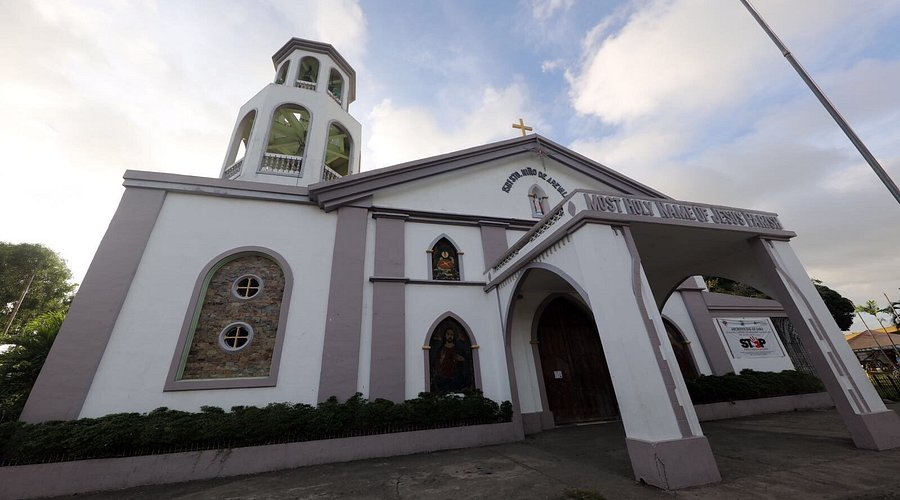

The Story
Roots, Rhythm & Reverence


Origins
The celebration began after Rev. Fr. Ambrosio Galindez, of the San Jose Parish, introduced the devotion to the Santo Niño. In 1968, a replica of the image was brought to Iloilo from Cebu, prompting a grand reception that would become the seed of the festival.
Ati-Atihan Roots
Originally known as "Iloilo Ati-Atihan," the festival was patterned after the renowned Ati-Atihan of Ibajay, Aklan — one of the Philippines' most beloved and ancient festivals, drawing on deep indigenous traditions of revelry and devotion.
Cultural Significance
The festival honors the legendary barter of Panay Island, where Malay settlers peacefully purchased the island from the indigenous Ati people — a founding story of harmony, respect, and kinship between peoples that resonates to this day.
Evolution into World-Class Event
What began as a small parish celebration has grown into a spectacular, large-scale event renowned globally for its "Ati Tribe" competition — featuring dancers with intricately painted skin and hand-crafted costumes. Starting in 2026, school-based teams returned to the competition, reigniting the festival's grassroots spirit.
What "Dinagyang" Means
The term Dinagyang was coined to describe the riotous, joyful, and merrymaking nature of the celebration. Derived from the Ilonggo word for revelry and exuberance, it perfectly captures the unbridled energy and communal joy of the festival.